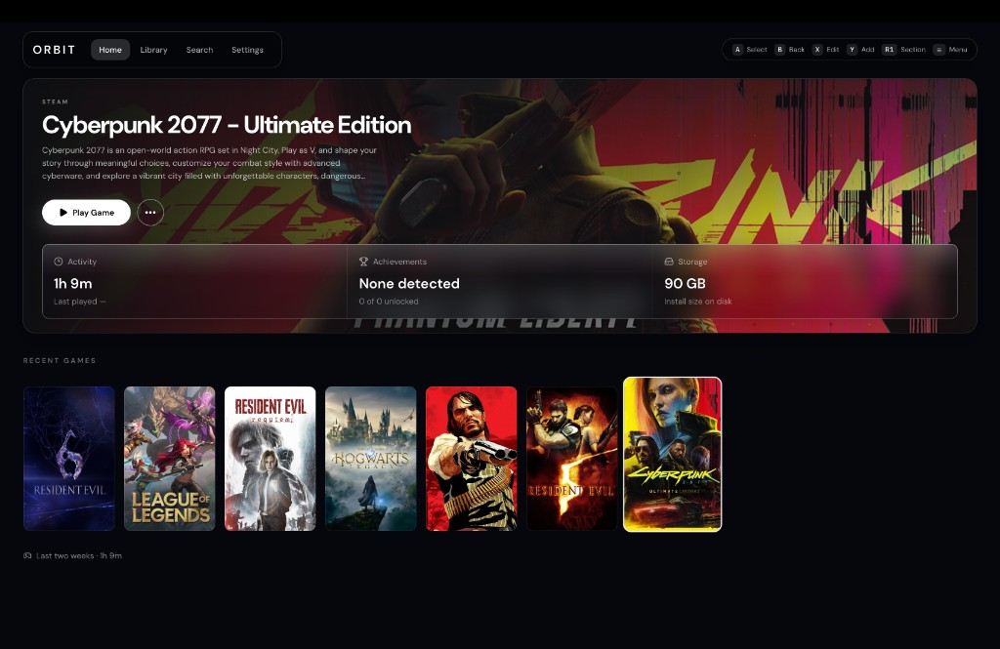
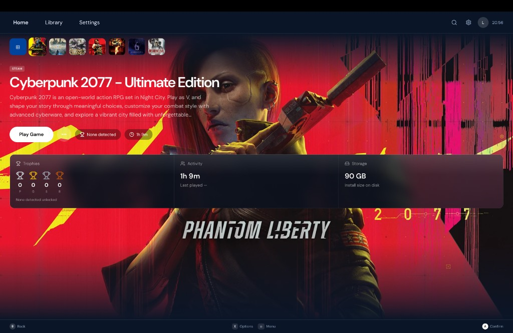
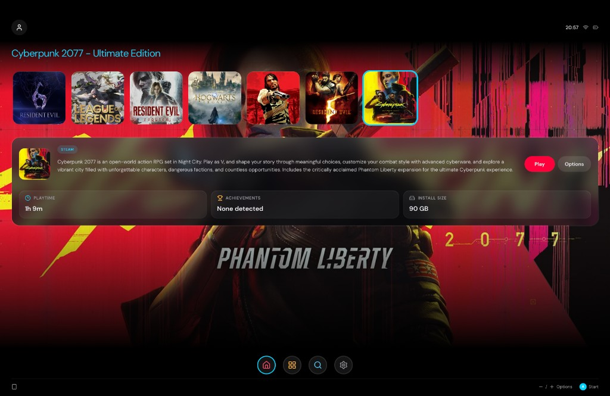

What is Orbit?
Orbit is a desktop game library and launcher built with Tauri 2, React, and SQLite. It keeps your games in one place, tracks playtime and achievements locally, and launches them safely from Rust — the frontend never spawns processes directly.
Designed for Apple Silicon Macs first, with a fullscreen UI made for controllers and keyboards alike.
Features
- Home & library — cinematic hero, filterable grid, search
- Imports — Steam, Astris (.nsp/.xci), GameHub, macOS apps, manual paths
- Launch sessions — playtime tracking, hide window while playing
- Edit artwork — title, description, portrait, landscape, and icon
- Themes — Orbit, PS5, and Switch 2 layouts + custom JSON themes
- Controller navigation — spatial focus with gamepad and keyboard
Screenshots



Built with
Custom themes
Drop plain JSON files into
~/Library/Application Support/Orbit/themes/
and reload from Settings. Themes can change colors, motion, and the entire app layout.
Controller mapping
D-pad / stick · Navigate · A · Select · B · Back
X · Edit · Y · Add game · L1/R1 · Sections · Menu · Settings
Keyboard: arrows, Enter, Escape, F, C, [ ] , M